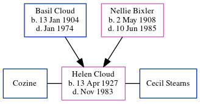

Helen May Stearns (née Cloud) 1927 - 1983
[ Home ] | [ Calendar ] | [ Surnames Index ] | [ Census Index ] | [ Family History ]The eldest of 3 children of Basil Cloud (a laborer at water company) and Nellie Bixler, Helen Cloud, the fifth cousin once-removed on the mother's side of Nigel Horne, was born in Indianapolis, Marion, Indiana, USA on Apr 13, 19271,2. She was married twice - to Cozine Cecil Stearns (on Dec 23, 1950 in Marion, Grant, Indiana, USA).
She died in Nov 1983 in Indiana1,2.
Parents
- Basil Frederick was born on Jan 13, 1904
- Nellie Mae was born on May 2, 1908
Citations
- Social Security Death Index - Findmypast
- United States Obituary Notices - Findmypast
Media
1940 US Census Transcription - USC-1940-1461728179
1930 US Census Transcription - USC-1930-004950631-00551-011
Social Security Death Index - USBMD/SSDI/316203286
United States Obituary Notices - US/TRIB/036214802
Family Tree
Generated by ged2site. Last updated on Jun 11, 2024